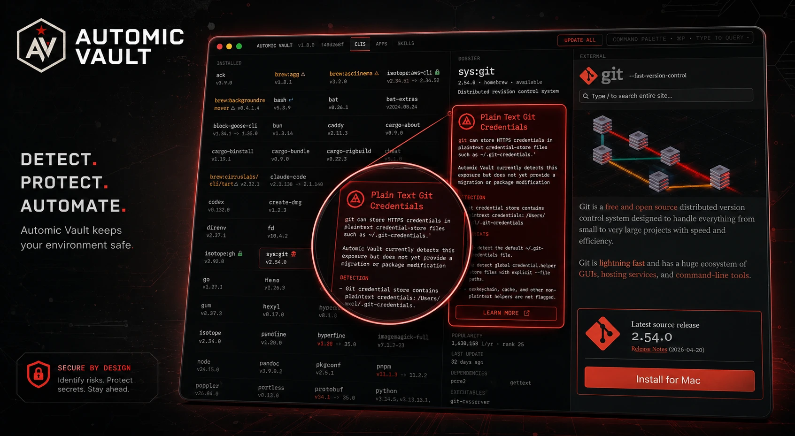

Keychain-backed secrets
Tools get secrets. Agents do not.
Automic Vault patches critical tools so credentials can move out of plaintext files and into local protected storage. The tool can still do its job; the agent loses the easy read path.
 Automic Vault
Automic Vault
From the creator of Homebrew
A hardened package manager and secrets boundary for the tools AI agents run on your Mac.
What changes when the agent moves from chat into your local runtime.
Keychain-backed secrets
Automic Vault patches critical tools so credentials can move out of plaintext files and into local protected storage. The tool can still do its job; the agent loses the easy read path.
Human approval gates
Built-in agent controls help, but a compromised agent controls its own policy surface. Automic Vault places gates at the local tool layer, where token export, package publishing, and other sensitive actions actually happen.
npm publish. Approve?
Deny
Approve
Nucleus package manager
Nucleus installs Homebrew, npm, and PyPI packages with hardened roots. Agents can run approved tools without turning the whole developer environment into writable ambient state.
Plaintext exposure scan
av secret-scanner searches for credentials that are already exposed in local files. Use it as a fast preflight before giving an autonomous run broad filesystem access.
Automic Vault.app
Search packages, inspect metadata, approve installs with Touch ID, follow updates, and use the av CLI when the terminal is the right interface.

Automic Vault installs familiar packages, then tightens what agents can mutate underneath them.
Central vaults manage secrets. Automic Vault controls whether a local tool can receive one.
Agent-level controls are useful. Tool-layer controls survive below the model and its prompt.
Store secrets locally and inject them only into approved tools.
02 Stop AI Agents Reading .env FilesRemove the easiest plaintext target from agent sessions.
03 API Key Management for AI AgentsKeep tokens out of chat while command-line tools still work.
04 MCP Secrets ManagementGive MCP tools access without giving models raw secrets.
17,450 formula and tap candidates reviewed; remaining known risks show as GUI hazards.
ambient registry credential helpers flagged as hazards
aws-cliAWS credentials served through av credential-helper
terraformcloud tokens served through Terraform's helper protocol
gitplaintext credential-store files detected in the GUI
opensshunencrypted private keys reported before agent runs
Free and open source